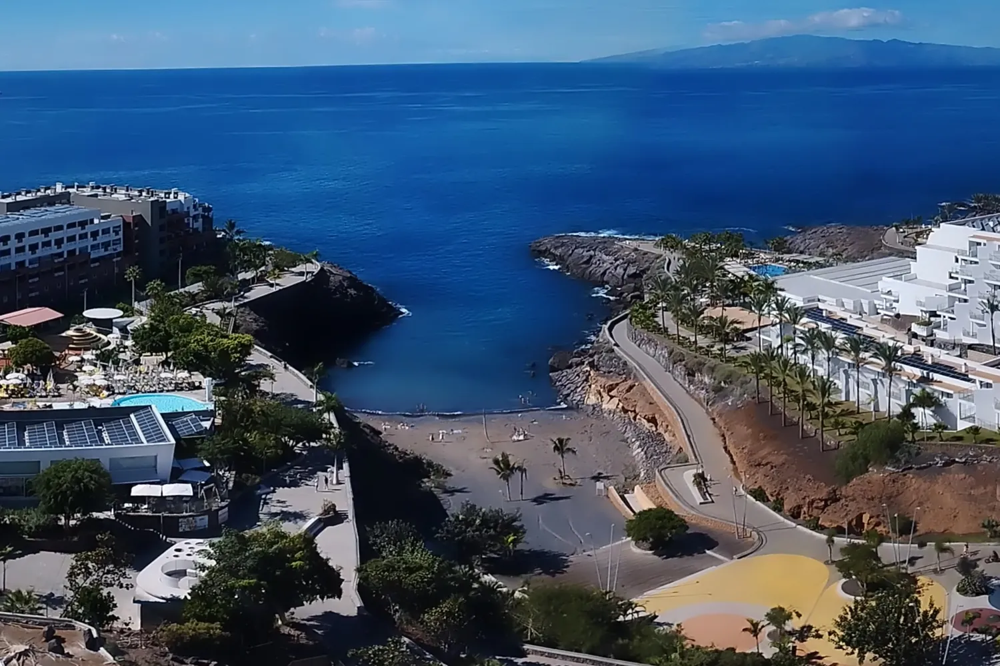
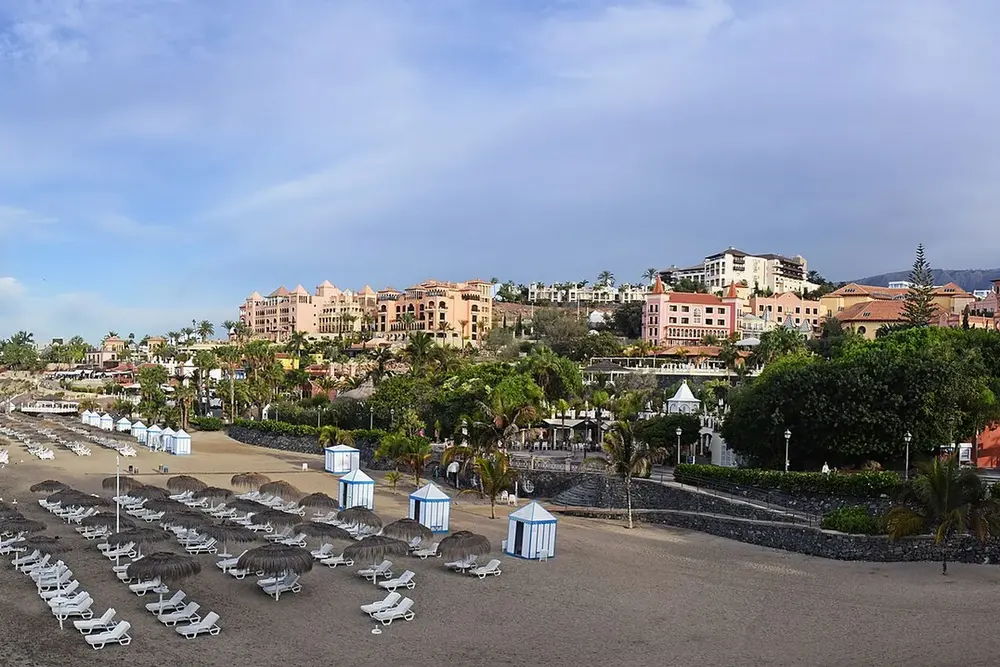
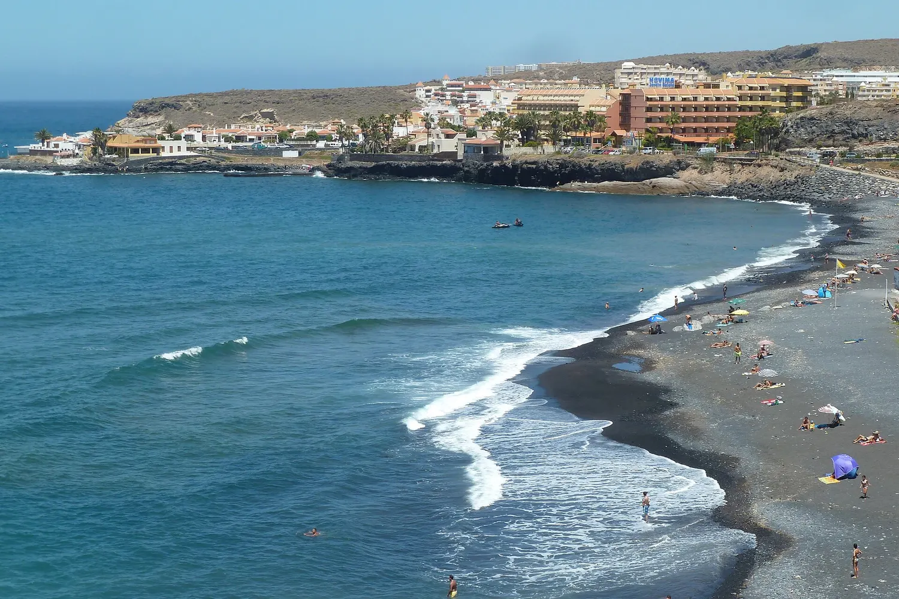
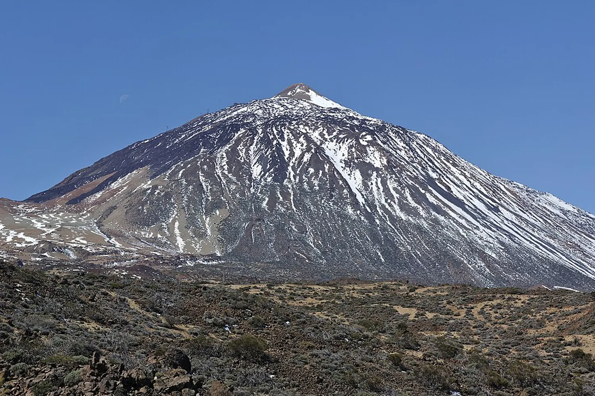
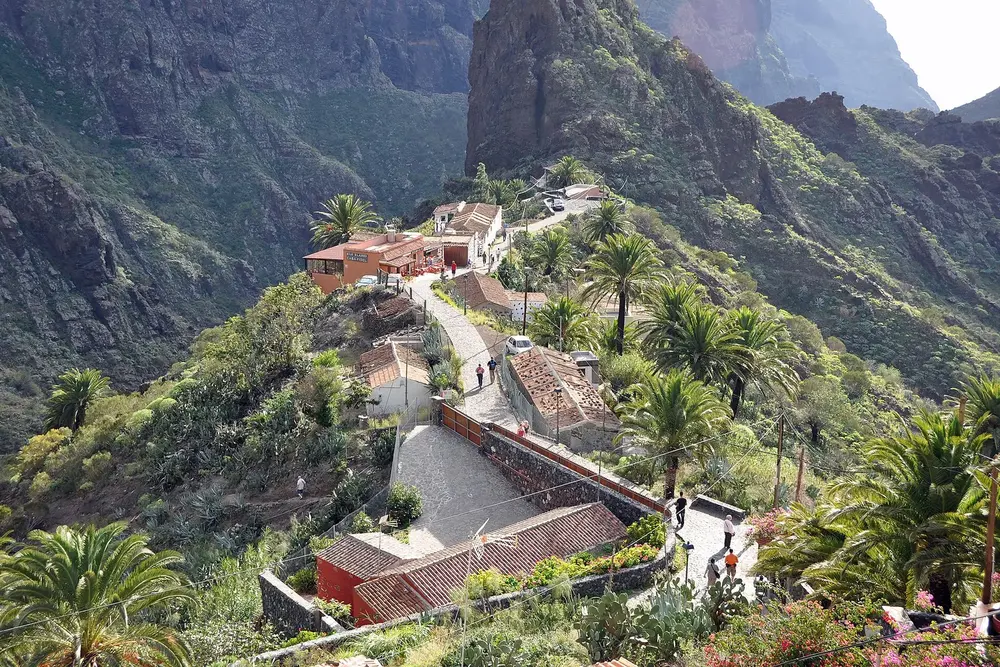
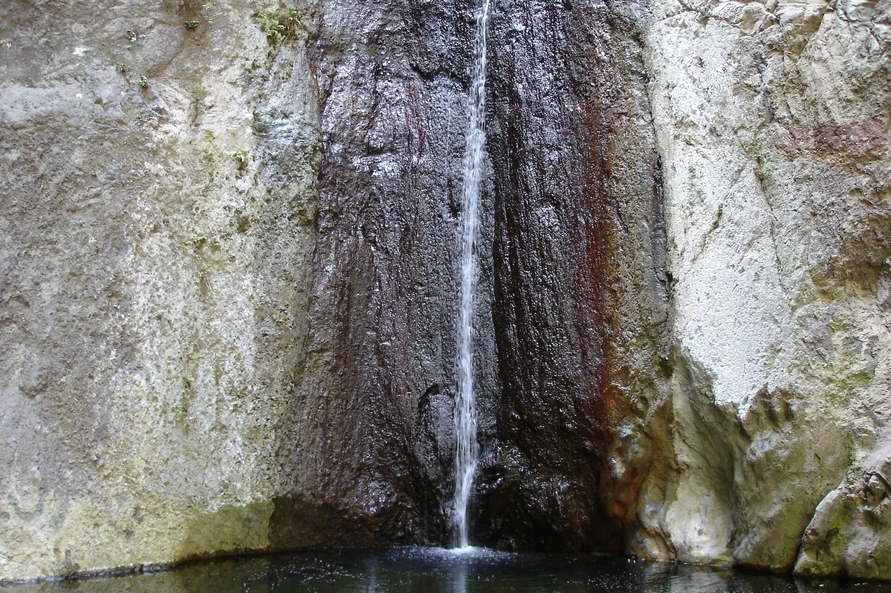
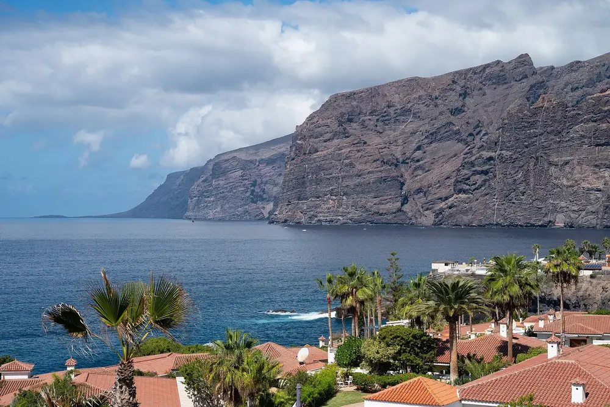
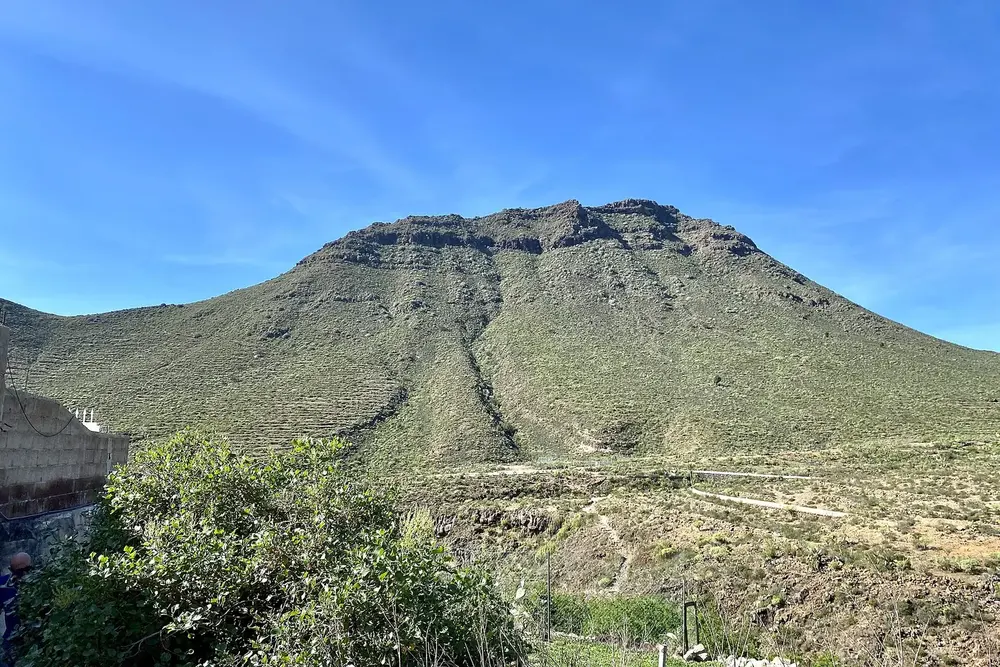
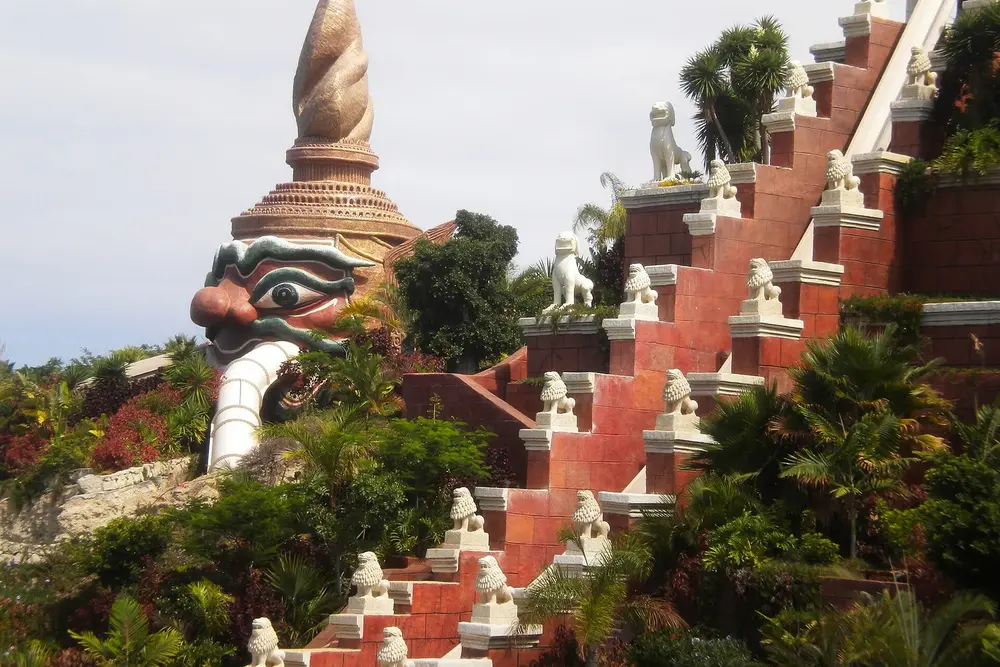
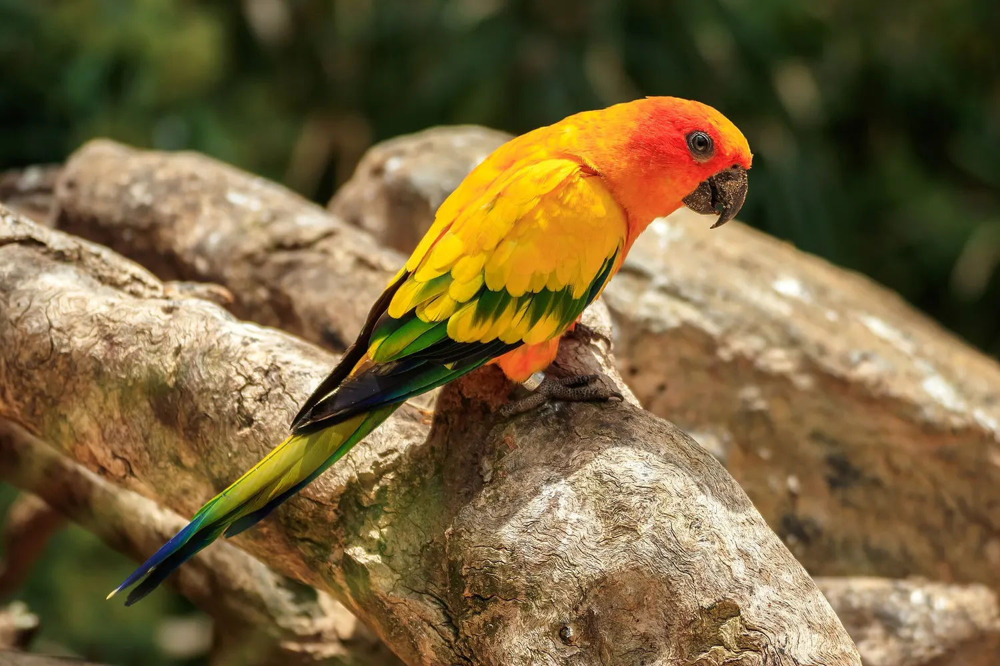

Joanna’s guide
Hello from us
Hi, I’m Joanna. We look after the studio ourselves, and this is the list we’d give a friend coming to stay. It’s a short list on purpose: a few places we love, plus the classics people ask us about. If you’re not sure about something, message us. We’re happy to help.
Our favourites
 Elena Ortuño · CC BY-SA 4.0
Elena Ortuño · CC BY-SA 4.0Chiringuito El Puertito
Our idea of a perfect afternoon. El Puertito is a little fishing cove ten minutes down the coast. You swim in the bay, then sit at the beach bar with grilled fish, simple Canarian food and something cold, a few steps from the water. It’s open most days, but not always, so have a quick look before you drive down. The last bit of road is dirt, so go slowly. Cash only.
Tasca Tierras del Sur, Granadilla
Real village cooking up in the hills. We went recently and loved it: local goat’s cheese, sausage, gofio, a good glass of local wine, and the people who run it really look after you. It’s about 40 minutes by car, and worth every minute. Call ahead to book: +34 922 77 14 82.
El Secreto de Chimiche
For a special dinner. It’s in an old tomato-packing warehouse in Chimiche, with Canarian cooking, beautiful meat and grills, and a Michelin Bib Gourmand. About half an hour by car, so easy if you have one. Book ahead.
The sea

Photo: from our balconyThe two little beaches below us
Down some steep stone steps. The water is lovely and clear for snorkelling on calm days. Wear water shoes, not flip-flops, because it’s rocky at the edge. There’s no lifeguard.
El Puertito
The same cove as the chiringuito, and calm. Bring a mask: on a lucky day you might see a sea turtle.
Diego Hernández
A wild beach with no buildings at all, on a rocky path near La Caleta. Take water, food and shade, because there’s nothing there. Some people swim without clothes. At high tide the sand disappears, so go when the tide is low.

Mark · CC BY 2.0Playa del Duque and Fañabé
If you just want a big golden beach with sunbeds and everything nearby.
More good food nearby

Edgar El · CC BY 3.0La Caleta
A little harbour full of fish restaurants. La Vieja is the famous one. It’s lovely at sunset, so book a table.
Days out

Quartl · CC BY-SA 3.0Teide
You can’t come to Tenerife and not go up. Book the cable car online, because it sells out. If you want to walk to the very top, you need a separate permit booked weeks ahead. Check the official park website for the details. Take a jacket: it’s cold up there, even in summer.

Marc Ryckaert · CC BY-SA 4.0Masca
The most beautiful village on the island, at the end of a crazy mountain road. The gorge hike needs booking, and you go by shuttle from Santiago del Teide, not your own car. Rules change often, so check the official website.

Fujnky · CC BY-SA 3.0Barranco del Infierno, Adeje
A walk through a ravine to a waterfall, about three hours there and back. You need a ticket for a time slot, so book online.

Tuxyso · CC BY-SA 4.0Los Gigantes and whale watching
The cliffs are huge, and whales and dolphins live off this coast all year round. Choose a boat with the blue “Barco Azul” flag: those are the licensed ones that keep a respectful distance.

9002Jack · CC0Roque del Conde
The flat-topped mountain you can see from the coast. A steep walk of about 2.5–3 hours from Vento, with a view over the whole south. Go early and take lots of water.
The big parks, if you’re into that

stephen jones · CC BY 2.0
H. Zell · CC BY-SA 3.0Loro Parque
The big animal park in Puerto de la Cruz, in the north. There’s no free bus from here, but you can buy a ticket that includes the coach, or a combined ticket with Siam Park.
Getting around
A car makes everything easier, especially for Teide and Masca. Without one, bus line 471 runs along the coast to Costa Adeje and Los Cristianos. Check the nearest stop and times in the free TITSA app or on Google Maps.
Enjoy the island, and enjoy the sunsets from the balcony. They’re the best part.
Joanna
Times are approximate, by car unless it says otherwise.